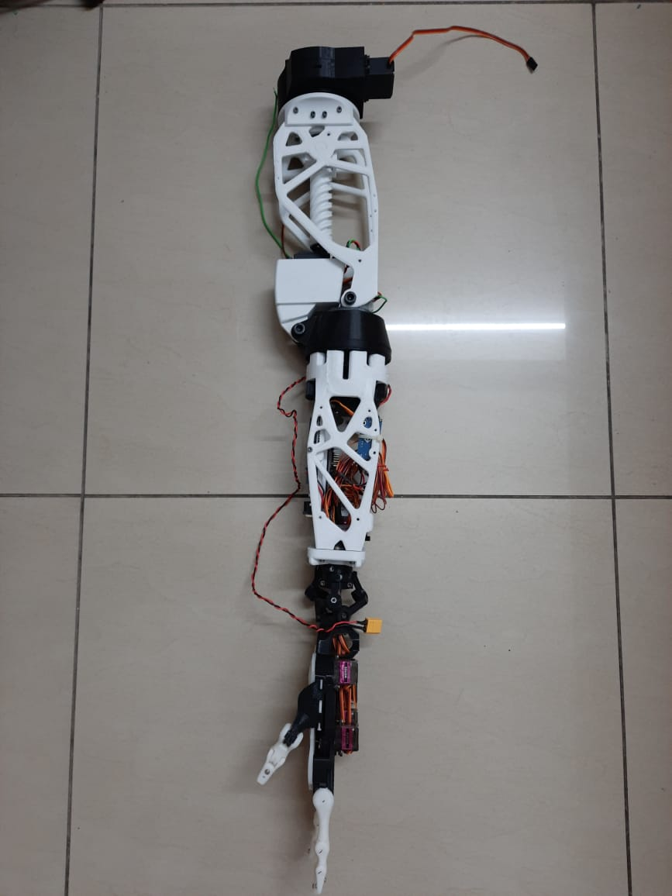
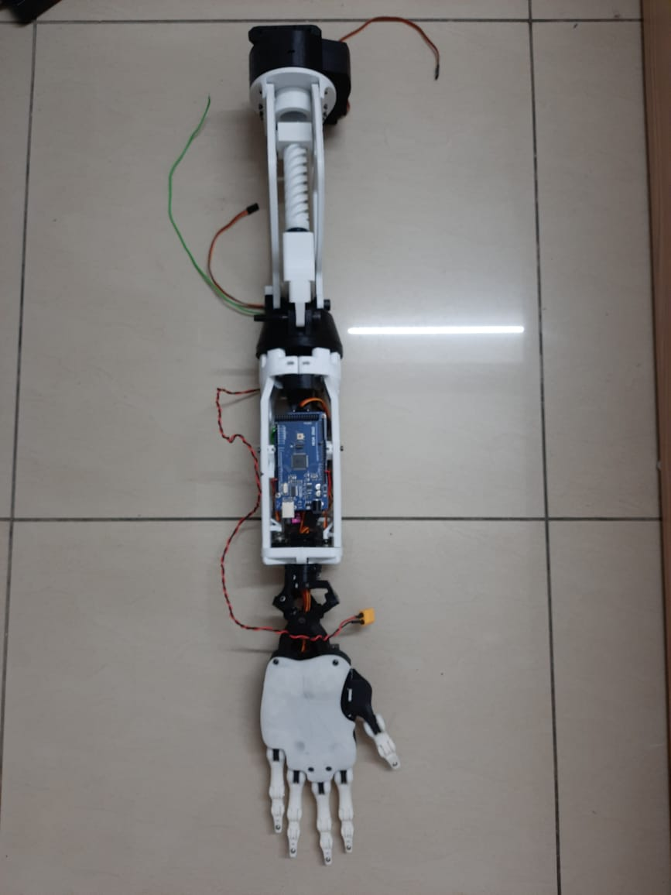

Meril Endosurgery, 2024
EtherCAT based Motor Driver For BLDC Motor
Emb. Software
Controls
Firmware development for a motor driver to run a BLDC Motor in
position, velocity and torque control modes. Supports both 6-step
control and FOC for the Misso Surgical Robot.
Platform
ASIX AX58400 Evaluation Board (Dual Core STM32H755x with Cortex M4
and Cortex M7). ST IHM08M1 3sh Motor Driver Hat.
PID Control for Position, Velocity and Torque
EtherCAT Slave design for User Interface.


Embedded C
Motor Control
Control Systems
STM32CubeIDE
Beckhoff TwinCAT XAE
IgH Etherlabs EtherCAT Master
Octave